The Process Flow Editor panel allows you to add and edit process sequences associated to flow groups. The flow group has a transport route in between the process steps which is visualized and defined in the 3D viewport.
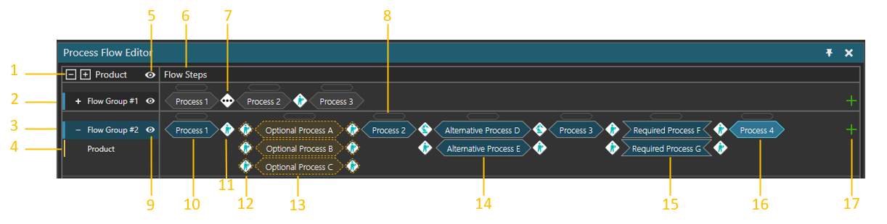
| 1. | Expand/Collapse Flow Groups and Product Types. |
| 2. | Collapsed Flow Group. |
| 3. | Flow Group. |
| 4. | Product Type. |
| 5. | Display Hidden Flow Groups. |
| 6. | Process Steps of the Flow Groups. |
| 7. | Transition Carried Out by Multiple Transport Controllers. |
| 8. | Handle to select the Process Step. The handle is used to access Process Step properties or to change the step order. |
| 9. | Hide/Show Flow Group. |
| 10. | Process Step. |
| 11. | Transition carried Out by Human Transport Controller. |
| 12. | Transition carried out by Human Transport Controller if Optional Process Step is executed. |
| 13. | Optional Process Step. Optional step is executed if the next Process Step and its processes are unavailable. |
| 14. | The first available Process Group is executed. |
| 15. | All Process Groups are executed. The available Process Groups are executed first. Notice the different Process Group icon. |
| 16. | Selected Process Step. |
| 17. | Add Process Step. |
Note that parallel Process Groups in a Process Step have top-down priority.
Contents Hide
To access the Process Flow Editor:
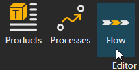
To add a new process step for a flow group, click the plus icon in the end of the row. You can select a process step from a list containing all available processes currently in the layout. You can filter process step from the list by using the Search field. The location of the process step which is being added is indicated with a line. The default location is after the selected process step.
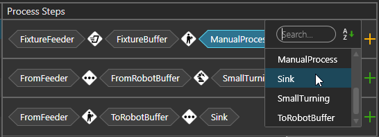
You can also add steps before and after an existing process step in a context menu. Select a process step or a transport controller, open context menu by clicking right mouse button, and then add steps in desired location.
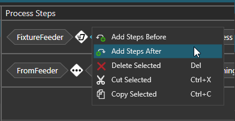
If you need to rearrange process steps, drag and drop a step before or after another step. The place where you are inserting a statement is shown by a line.
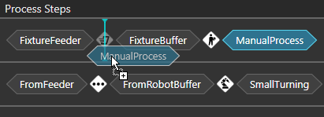
The icon between the process steps indicates which transport controller is used to transporting the product from a process to another. If a transition of any of the all possible routes between process steps requires using multiple transport controllers, the icon shows three dots. If the icon shows red cross, no route exists between the process steps and therefore it is not possible. This happens, when the production flow is not yet defined. However, it can also be by design, if container mode is used in transport in or transport out statements.
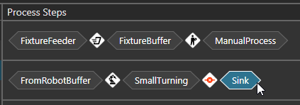
You can define the product flow in two ways.
using process labels in 3D viewport to define transport links and process steps simultaneously
defining transport links in 3D viewport and process steps separately
Hover mouse over a transport node. All processes associated with the nodes will be displayed. The node color changes from blue to yellow indicating its processes.
Select (Left-Mouse-Click) on the process label and move your mouse to the next process node you want to connect.
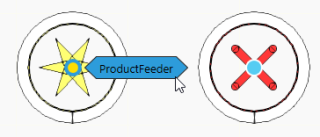
Dotted lines will be shown, meaning you can connect to that process.

Click on the process label you want to connect. The dotted line is turned to a solid line and the flow is defined from one process to another
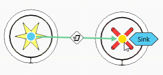
After this, the process is added automatically to the Process Steps in the Process Flow Editor
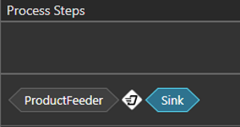
1. Instead of clicking process label, click the transport node and move the mouse to another node.
Move mouse over a node. Do not click the process label, instead click the node and move the mouse to the other node.
Dotted lines will be shown, meaning you can connect to that node.
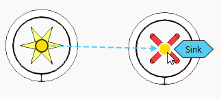
Click on the node you want to connect. The transport link is now created in the 3D world.

In the Process Steps, search for the process and add it to the sequence.
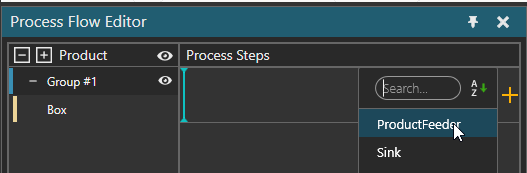
Search for the process and add it manually.
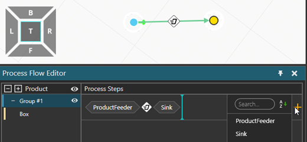
When having many transport links visible in 3D viewport, you might want to clarify the view by filtering transport links to show only routes between specific process steps.
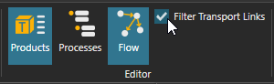
To filter the transport links:
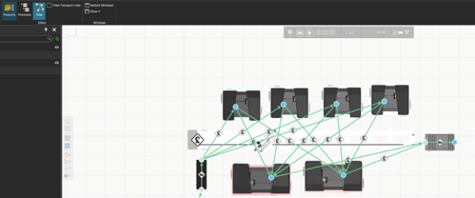
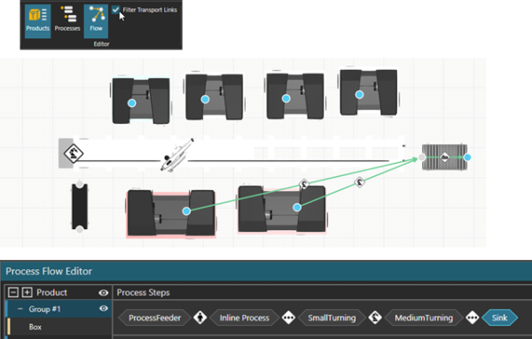